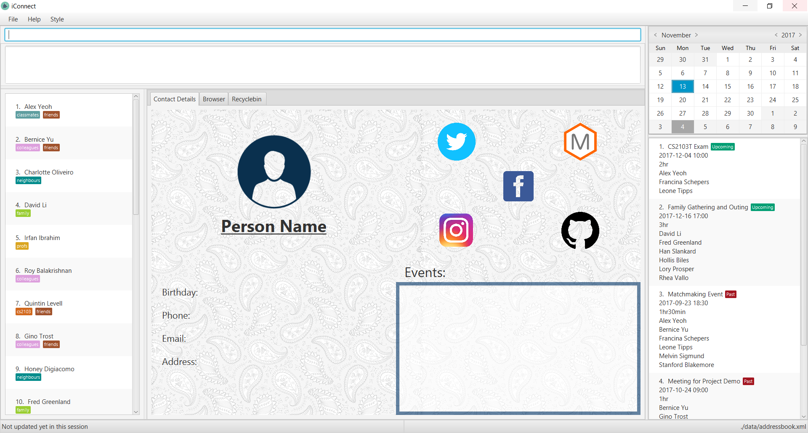

By: Team W09-B03 Since: Sep 2017 Licence: MIT
- 1. Introduction
- 2. Quick Start
- 3. Features
- 3.1. Viewing help :
help[Since v1.3] - 3.2. Adding a person:
add[Since v1.1] - 3.3. Listing all persons :
list[Since v1.1] - 3.4. Editing a person :
edit[Since v1.1] - 3.5. Locating persons by different attributes:
find[Since v1.2] - 3.6. Sorting list of persons:
sort[Since v1.2] - 3.7. Deleting a person :
delete[Since v1.2] - 3.8. Adding a tag to a person(s) :
t-add[Since v1.1] - 3.9. Removing a tag to a person(s) :
t-remove[Since v1.2] - 3.10. Find the person(s) with given tags:
t-find[Since v1.3] - 3.11. Find the location of a person using Google Map:
m-show[Since v1.3] - 3.12. Find the route from user’s current location to the person seleted:
m-route[Since v1.3] - 3.13. Schedule an Event: s-add [Since v1.4]
- 3.14. Cancel an Event: s-remove [Since v1.4]
- 3.15. Making a backup address book:
export[Coming in v2.0] - 3.16. Selecting a person :
select[Since v1.1] - 3.17. Listing entered commands :
history[Since v1.1] - 3.18. Undoing previous command :
undo - 3.19. Redoing the previously undone command :
redo - 3.20. Listing all persons removed:
bin-list[Coming in v2.0] - 3.21. Restoring person(s) :
bin-restore[Coming in v2.0] - 3.22. Clearing all contacts from bin :
bin-clear[Coming in v2.0] - 3.23. Clearing all entries :
clear - 3.24. Exiting the program :
exit - 3.25. Saving the data
- 3.1. Viewing help :
- 4. FAQ
- 5. Command Summary
1. Introduction
Introducing iConnect, our one-stop student networking application. We aim to serve as your personal secretary to ease your job as a student. Due to the ever-increasing workload, it has become a challenge to keep track of various school commitments while maintaining relationships with peers.
With iConnect, missing schedules and losing contact with friends will be a thing of the past. Let’s get connected now!
2. Quick Start
-
Ensure you have Java version
1.8.0_60or later installed in your Computer.Having any Java 8 version is not enough.
This app will not work with earlier versions of Java 8. -
Download the latest
iConnect.jarhere. -
Copy the file to the folder you want to use as the home folder for your iConnect.
-
Double-click the file to start the app. The GUI should appear in a few seconds.
 -
Type the command in the command box and press Enter to execute it.
e.g. typinghelpand pressing Enter will open the help window. -
Some example commands you can try:
-
list: lists all contacts -
addn/John Doe p/98765432 e/johnd@example.com a/John street, block 123, #01-01: adds a contact namedJohn Doeto the Address Book. -
deleteI/1 3: deletes the 1st and 3rd contact shown in the current list -
exit: exits the app
-
-
Refer to the Features section below for details of each command.
3. Features
Command Format
-
Words in
UPPER_CASEare the parameters to be supplied by the user e.g. inadd n/NAME,NAMEis a parameter which can be used asadd n/John Doe. -
Items in square brackets are optional e.g
n/NAME [t/TAG]can be used asn/John Doe t/friendor asn/John Doe. -
Items with
… after them can be used multiple times including zero times e.g.[t/TAG]…can be used ast/friend,t/friend t/familyetc. -
Parameters can be in any order e.g. if the command specifies
n/NAME p/PHONE_NUMBER,p/PHONE_NUMBER n/NAMEis also acceptable.
| iConnect will be referred to as address book in the following documentation. |
3.1. Viewing help : help [Since v1.3]
Alias: h
Shows the usage of the given command word.
Format: help COMMAND
Examples:
-
help list
Shows the usage of commandlist -
help add
Shows the usage of commandadd
3.2. Adding a person: add [Since v1.1]
Alias: create put
Stores a person’s contact details to address book records.
Format: add n/NAME p/PHONE_NUMBER e/EMAIL a/ADDRESS [t/TAG]…
| A person can have any number of tags (including 0) |
Examples:
-
add n/John Doe p/98765432 e/johnd@example.com a/John street, block 123, #01-01 -
add n/Betsy Crowe t/friend e/betsycrowe@example.com a/Newgate Prison p/1234567 t/criminal -
creat n/John Doe p/98765432 e/johnd@example.com a/John street, block 123, #01-01 -
put n/John Doe p/98765432 e/johnd@example.com a/John street, block 123, #01-01
3.3. Listing all persons : list [Since v1.1]
Alias: show all
Shows a list of all persons stored in address book.
Format: list
3.4. Editing a person : edit [Since v1.1]
Alias: update modify
Edits an existing person in the address book.
Format: edit INDEX [n/NAME] [p/PHONE] [e/EMAIL] [a/ADDRESS] [t/TAG]…
Examples:
-
edit 1 p/91234567 e/johndoe@example.com
Edits the phone number and email address of the 1st person to be91234567andjohndoe@example.comrespectively -
edit 2 n/Betsy Crower t/
Edits the name of the 2nd person to beBetsy Crowerand clears all existing tags -
update 1 p/91234567 e/johndoe@example.com
Edits the phone number and email address of the 1st person to be91234567andjohndoe@example.comrespectively -
modify 1 p/91234567 e/johndoe@example.com
Edits the phone number and email address of the 1st person to be91234567andjohndoe@example.comrespectively
3.5. Locating persons by different attributes: find [Since v1.2]
Alias: search get
Searches for persons whose specified attribute contains any of the given keywords.
Format: find [n/NAME] [p/PHONE] [e/EMAIL] [a/ADDRESS]
Examples:
-
find n/John
ReturnsjohnandJohn Doe -
search p/98765432
Returns the person having phone number98765432 -
get e/johndoe@gmail.com
Returns the person having emailjohndoe@gmail.com -
find n/Betsy Tim John a/clementi street
Returns any person having namesBetsy,Tim,Johnor living atClementi Street
3.6. Sorting list of persons: sort [Since v1.2]
Sorts the full list of persons based on the specified attribute.
Format: sort [n/(ASC OR DSC)]
| The list can be sorted by one of the following attribute: name, phone, email, address, time added. |
Examples:
-
sort
Returns list of persons sorted by name added in ascending order -
sort p/ASC
Returns list of persons sorted by phone in ascending order -
sort t/DSC
Returns list of persons sorted by time added in descending order
3.7. Deleting a person : delete [Since v1.2]
Alias: remove -
Deletes a group of people from the address book.
Format:`delete I/INDEX INDEX …` (or) delete n/Name
Examples:
-
list
delete 1 2
Deletes the 1st and 2nd person in the address book -
list
remove 1 3
Deletes the 1st and 3rd person in the address book -
list
- 2 3
Deletes the 2nd and 3rd person in the address book -
find Betsy
delete 1
Deletes the 1st person in the results of thefindcommand
3.8. Adding a tag to a person(s) : t-add [Since v1.1]
Adds tag to specified person(s) from the address book.
Format: t-add TAG INDEX
Examples:
-
list
t-add 2 3 friends
Adds the tag friends to the 2nd and 3rd person in the address book
3.9. Removing a tag to a person(s) : t-remove [Since v1.2]
Removes a tag from specified person(s) from the address book.
Format: t-remove INDEX… TAG
Examples:
-
list
t-remove 2 3 friends
Removes the tag friends from the 2nd and 3rd person in the address book
3.10. Find the person(s) with given tags: t-find [Since v1.3]
Finds all persons with the given tag.
Format: t-find TAG
Examples:
-
t-find friend classmateShows all the people with tagfriendor tagclassmate
3.11. Find the location of a person using Google Map: m-show [Since v1.3]
Finds the location of a person as specified in the contact address in Google Map.
Format: m-show INDEX
Examples:
-
m-show 1
Shows the address of person with index 1 on the google map
3.12. Find the route from user’s current location to the person seleted: m-route [Since v1.3]
Gets the shortest path from the location provided to the address of the selected person in Google map.
Format: m-route INDEX a/ADDRESS
Examples:
-
m-route 1 a/Clementi Street
Shows the route fromClementi Streetto the address of person with index number1 -
m-route 7 a/John street, block 123, #01-01
Shows the route fromJohn street, block 123, #01-01to the address of person with index number7
3.13. Schedule an Event: s-add [Since v1.4]
Adds an event, along with the members involved, into the calendar.
Format: s-add [m/INDEX INDEX…] n/NAME t/TIME d/DURATION
| It is possible to create an event without any members. |
Examples:
-
s-add m/1 2 3 n/iConnect Conference t/2017-12-04 08:45 d/120
Adds a two-hour long event called ‘iConnect Conference’ on 4th of December 2017 at 8:45AM ,with the specified person at index 1, 2 and 3 into the addressbook calendar. -
s-add n/Exam Date t/2017-12-04 14:30 d/120
Adds a two-hour long event called ‘Exam Date’ on 4th of December 2017 at 2:30PM into the addressbook calendar.
3.14. Cancel an Event: s-remove [Since v1.4]
Removes an event from the calendar.
Format: s-remove e/INDEX INDEX…
| It is possible to remove multiple events with a single command. |
Examples:
-
s-remove 1
Removes a single event with the index 1. -
s-remove 1 2 3
Removes 3 events with the index 1, 2 and 3.
3.15. Making a backup address book: export [Coming in v2.0]
Backup your contact details to the given path.
Format: export PATH
3.16. Selecting a person : select [Since v1.1]
Alias: choose
Selects the person identified by the index number used in the last person listing.
Format: select INDEX
Examples:
-
list
select 2
Selects the 2nd person in the address book -
find Betsy
choose 1
Selects the 1st person in the results of thefindcommand
3.17. Listing entered commands : history [Since v1.1]
Alias: record
Lists all the commands that you have entered in reverse chronological order.
Format: history or record
|
Pressing the ↑ and ↓ arrows will display the previous and next input respectively in the command box. |
3.18. Undoing previous command : undo
Restores the address book to the state before the previous undoable command was executed.
Format: undo
|
Undoable commands: those commands that modify the address book’s content ( |
Examples:
-
delete 1
list
undo(reverses thedelete 1command) -
select 1
list
undo
Theundocommand fails as there are no undoable commands executed previously -
delete 1 2
clear
undo(reverses theclearcommand)
undo(reverses thedelete 1 2command)
3.19. Redoing the previously undone command : redo
Reverses the most recent undo command.
Format: redo
Examples:
-
delete 1
undo(reverses thedelete 1command)
redo(reapplies thedelete 1command) -
delete 1 2
redo
Theredocommand fails as there are noundocommands executed previously -
delete 1
clear
undo(reverses theclearcommand)
undo(reverses thedelete 1command)
redo(reapplies thedelete 1command)
redo(reapplies theclearcommand)
3.20. Listing all persons removed: bin-list [Coming in v2.0]
Shows a list of persons removed from the address book.
Format: bin-list
3.21. Restoring person(s) : bin-restore [Coming in v2.0]
Restores person(s) from bin.
Format: bin-restore INDEX INDEX …
Examples:
-
bin-list
bin-restore 1 2
Restores the 1st and 2nd person in the bin-list
3.22. Clearing all contacts from bin : bin-clear [Coming in v2.0]
Clears all entries in the bin.
Format: clear-bin
3.25. Saving the data
Address book data are saved in the hard disk automatically after any command that changes the data.
There is no need to save manually.
4. FAQ
Q: How do I transfer my data to another Computer?
A: Install the app in the other computer and overwrite the empty data file it creates with the file that contains the data of your previous Address Book folder.
Q: Can I use this app without network connection?
A: You can achieve most of the commands offline except for those features using the browser window (e.g. select or m-show).
5. Command Summary
-
Help :
help COMMAND_WORDe.g.help list -
Add
add n/NAME p/PHONE_NUMBER e/EMAIL a/ADDRESS [t/TAG]…
e.g.add n/James Ho p/22224444 e/jamesho@example.com a/123, Clementi Rd, 1234665 t/friend t/colleague -
List :
list -
Edit :
edit INDEX [n/NAME] [p/PHONE_NUMBER] [e/EMAIL] [a/ADDRESS] [t/TAG]…
e.g.edit 2 n/James Lee e/jameslee@example.com -
Find :
find [n/NAME] [p/PHONE] [e/EMAIL] [a/ADDRESS]
e.g.find n/James p/8765 e/jamesho@example.com a/clementi street -
Sort :
sort [n/(ASC/DSC)] [p/(ASC/DSC)] [e/(ASC/DSC)] [a/(ASC/DSC)]
e.g.sort n/ASC -
Delete :
delete I/INDEX INDEX…
e.g.delete I/3 4 -
TagAdd :
t-add INDEX INDEX… [TAG]
e.g.t-add 3 4 friends -
TagRemove :
t-remove INDEX INDEX… [TAG]
e.g.t-remove 3 4 friends -
TagFind :
t-find [TAG]
e.g.t-find friends -
MapShow :
m-show INDEX
e.g.m-show 1 -
MapRoute :
m-route INDEX a/ADDRESS
e.g.m-show 1 a/NUS -
ScheduleAdd :
s-add [m/INDEX INDEX…] n/NAME t/TIME d/DURATION
e.g.s-add m/1 2 3 n/iConnect Conference t/2017-12-04 08:45 d/120 -
ScheduleRemove :
s-remove e/INDEX INDEX…
e.g.s-remove e/1 2 3 -
Export :
export PATH
e.g.export /desktop/new_folder -
Select :
select INDEX
e.g.select 2 -
History :
history -
Undo :
undo -
Redo :
redo -
BinList :
bin-list -
BinRestore :
bin-restore INDEX INDEX…
e.g.bin-restore 1 2 -
BinClear :
bin-clear -
Clear :
clear -
Exit :
exit